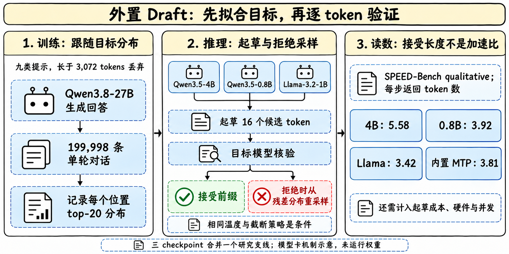

一个目标、三个完整起草模型

| 起草底座 | Embedding B | 非Embedding B | 总量 B | 层/hidden | 最大位置配置 |
|---|---|---|---|---|---|
| Qwen3.5-4B | 0.64 | 3.57 | 4.21 | 32 /2560 | 262144 |
| Qwen3.5-0.8B | 0.25 | 0.50 | 0.75 | 24 /1024 | 262144 |
| Llama3.2-1B | 0.51 | 0.97 | 1.48 | 16 /2048 | 131072 |
| Qwen3.8-27B内置MTP | 0（共享） | 0.42 | 0.42 | 依赖target | 不能独立运行 |
三份发布config均BF16、tie_word_embeddings=true、vocab_size=248320。参数表只算一份共享输入/输出矩阵；MTP不自行存embedding/head，却依赖target中另2.54B共享参数。Llama迁到Qwen词表后大于原1B底座，不是凭空更大hidden；Qwen两卡训练长度为12288，配置的262144不等于已经验证那么长，长上下文测试仅33k–46k prompts。
ModelOpt文档把外置模式与head模式区分：target冻结且不改，在推理时不依赖它的hidden来驱动draft。模型卡声明基于Llama3.2-1B，参考训练示例写Llama3.2-1B-Instruct；本文保留两种来源表述，不擅自认定实际初始化完全一致。许可为NVIDIA Open Model Agreement，并分别保留Qwen Apache与Llama3.2 Community License义务，不能统一写成Apache2.0。
数据、词表迁移和训练目标
三卡给199998条单轮对话，Nemotron-Post-Training-Dataset-v2只取prompt：STEM、code、math、chat，以及德/西/法/意/日五语言，固定seed近等份；超过3072token的prompt丢弃。由Qwen3.8-27B合成回答，每个response位置记录target部署策略下top20输出分布。固定温度1、top-k20、top-p0.95；不是不受限原始softmax。卡上的宽泛“1B–10T text training data size”标签，不可替代这批199998条的精确说明，也不推算每条都达到长度上限。
跨tokenizer时先按target词表尺寸新建embedding；相同拼写token的旧行迁到新位置，其余从draft embedding统计分布随机初始化；untied输出head也对应重建，并重映射特殊tokens，再做分布对齐。迁移匹配率衡量词表重合，不是模型质量；对小draft，词表矩阵占比很大。推理时因此直接共享token ID空间，无需逐token再翻译。
记target与draft实际服务分布为p、q。精确拒绝采样接受y的概率为min(1,p(y)/q(y))，拒绝后从归一化的正残差[p−q]+重采样。在相同条件、正确实现下：
$$ P(\mathrm{accept})=\sum_y\min(p(y),q(y))=1-\tfrac12\sum_y|p(y)-q(y)|. $$
这是单token推导，不是卡中“每target步返回token数”的另一个名字；目标输出分布不变依赖核验/残差采样、温度与截断一致，并非draft自己生成的文本质量得到保证。
| ModelOpt当前目标 | teacher / draft所见分布 | 条件与不能混用的地方 |
|---|---|---|
| soft_ce | teacher软分布交叉熵 | dense hidden-state路径；与sparse_data_path配对为硬错误 |
| tvd | 总变差距离 | draft未施加服务截断；稀疏teacher仍是截断分布 |
| tvd_deploy | 两侧都施加同一服务top-k/top-p后的TVD | 只有这一路直接对应实际拒绝概率 |
| tvd_ce | tvd加teacher argmax交叉熵 | 示例权重0.9/0.1；加了CE后不是纯拒绝率 |
当前recipe默认tvd；说明文档推荐先试tvd_deploy，但其Open Items说dense/soft_ce/tvd_deploy仅测试覆盖、未完整端到端run；已经完整跑通的是sparse+tvd/tvd_ce和跨词表迁移。不能把“推荐”写成发布者已验证全部路径。保存dump没有记录top-p，top-p不匹配不会自动发现；仅top-k部分有warning。温度不等于1时，训练温度1分布也不再等同部署分布。
Llama→Qwen参考配置给8GPU、2epoch、seq12288、每设备batch1×accum2=effective16、LR5e-5、warmup250、clip1、seed42、vocab_swap=true、tvd_ce。它是明确标为reference configuration的当前main说明，不补写为三个HF权重实际run全部如此。不同LR/loss经过接受长度sweep；实际checkpoint的完整学习率、校准、训练算力和数据hash仍不足。
离线dump必须只score assistant spans；chat template的generation标签要逐片段解码核对，不能只数token。producer会跳过超长整段对话，collator按seq_len padding；过长配置浪费padding、过短丢样本。首轮建memmap成本高，cache_dir与shard列表必须固定；多个并发任务不能误复用另一份teacher缓存。这些是文档中的数据与harness约束，本文没有执行它们。
完整接受长度表与硬件边界
卡把acceptance rate定义成每个target步骤返回的token数，以下按该单位保留，不写成百分比。draft block size=16；同一target、数据和harness，按类别平均。qualitative为1138 conversation turns，throughput-32k为1536条33k–46k单轮prompt，三种entropy各512条。
| qualitative分类 | 4B draft | 0.8B draft | Llama draft | target MTP |
|---|---|---|---|---|
| coding | 5.22 | 3.79 | 3.29 | 3.78 |
| humanities | 5.39 | 3.79 | 3.29 | 3.61 |
| math | 5.61 | 3.79 | 3.10 | 3.63 |
| multilingual | 6.55 | 4.67 | 3.55 | 4.38 |
| qa | 5.39 | 3.88 | 3.65 | 3.75 |
| rag | 6.58 | 4.78 | 4.19 | 4.68 |
| reasoning | 5.98 | 4.12 | 3.50 | 3.93 |
| roleplay | 4.41 | 3.10 | 3.02 | 3.16 |
| stem | 5.44 | 3.72 | 3.10 | 3.61 |
| summarization | 6.19 | 4.26 | 4.03 | 4.13 |
| writing | 4.59 | 3.22 | 2.91 | 3.29 |
| Overall Average | 5.58 | 3.92 | 3.42 | 3.81 |
| throughput-32k分类 | 4B draft | 0.8B draft | Llama draft | target MTP |
|---|---|---|---|---|
| low_entropy | 5.80 | 4.17 | 3.55 | 4.73 |
| mixed | 5.53 | 3.80 | 3.12 | 3.85 |
| high_entropy | 4.01 | 2.84 | 2.54 | 3.00 |
| Overall Average | 5.11 | 3.60 | 3.07 | 3.86 |
“throughput-32k”是子集名，表格仍为接受长度，不能误写成tokens/s。卡没有完整延迟、并发、功率、方差或逐任务原始run，bonus token计数细节也未在这份卡充分展开。小draft省计算但接受较少，4B接受较多但起草更贵；prefill、target验证成本、KV缓存及batch不同都可能改变最优点。
硬件说明同时列vLLM / Blackwell、测试硬件“NVIDIA Groq3 LPU”，并说明意图在LPU编译和运行；又称标准HF包可加载vLLM、SGLang、TRT-LLM。这是作者部署说明的不同层次，未提供可复核GPU端到端速度；本文不把LPU接受长度推成GB300上的加速比。标准HF external draft不需要把head再export，head-export脚本对它应拒绝；是否需要特定serving版本仍要独立核验。
对 Agent Training 的判断与资料地图
可以做三个区分实验：词表匹配与跨词表但同预算；tvd与tvd_deploy/tvd_ce但同teacher dump；短上下文与长上下文专项数据但同目标任务。必须固定核验协议与失败样本分母，记录输出分布检查、真实延迟和worker资源。当前无原始run/多种子CI，也未对Agent终态收益做直接评估，所有实验均为建议而非完成。
- 三份4B模型卡、0.8B模型卡、Llama模型卡
- ModelOpt external说明、当前recipe
- 官方发布活动；只用publish动作，不用仓库创建或lastModified。
- src中保留三卡/六配置、ModelOpt文档/recipe、publish证据；没有独立本family专属技术报告或官方机制图，手绘图是机制解释，不替代原始实验。
- Sigma、Qwen3.8-Family
- 中文Poster：external_draft_poster_zh.html